10-Permanent Advantage - Bishop pair
Steinitz's Advantages: 10-Permanent Advantage - Bishop pair · 24 January 2019
This is an endgame position. Even though the material is "equal," White possesses the bishop pair, which guarantees him an advantage in this simplified open position. The bishop pair coordinates excellently.
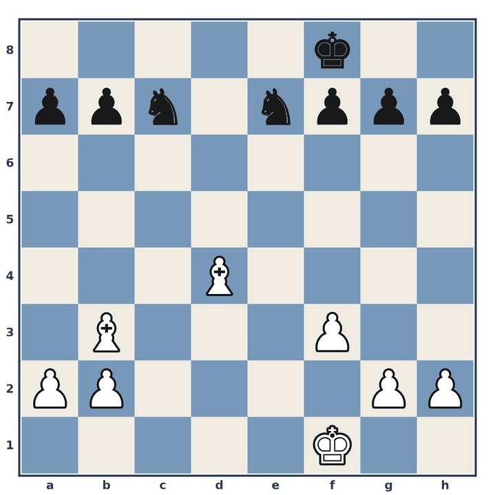
Position before 1.
1. ♗xa7
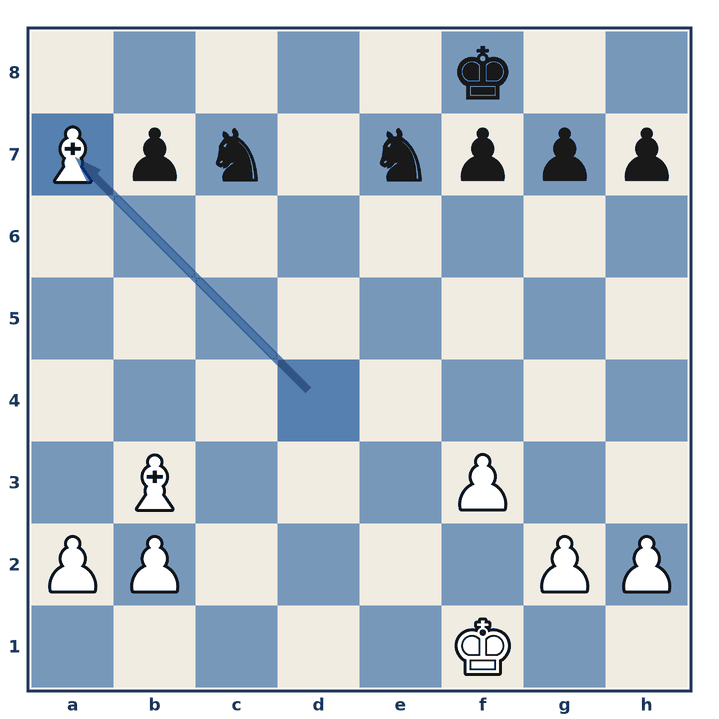
1… ♔e8
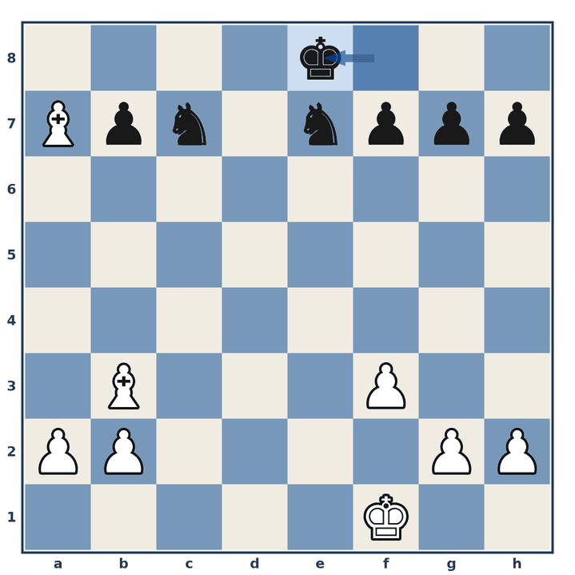
2. ♔e2
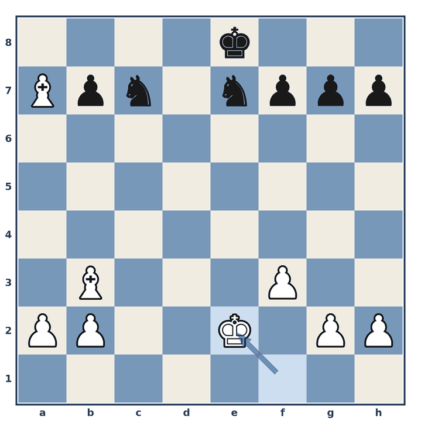
2… f5
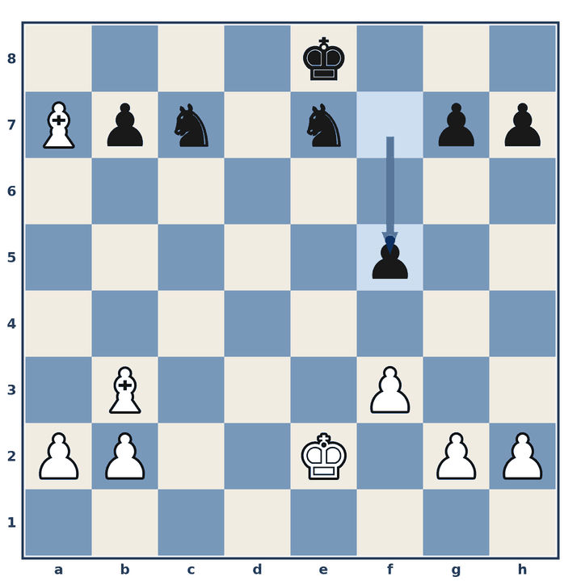
3. ♔d3
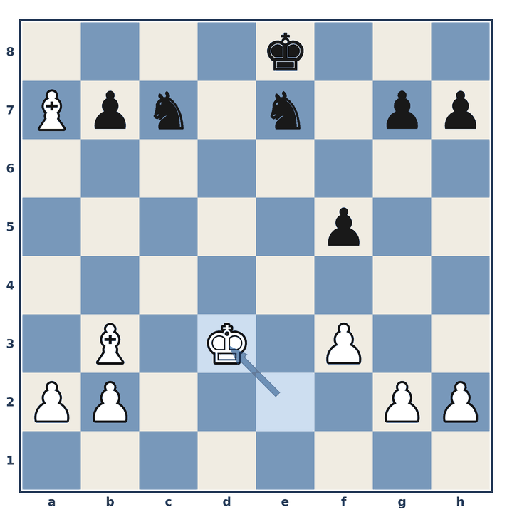
3… ♔d7
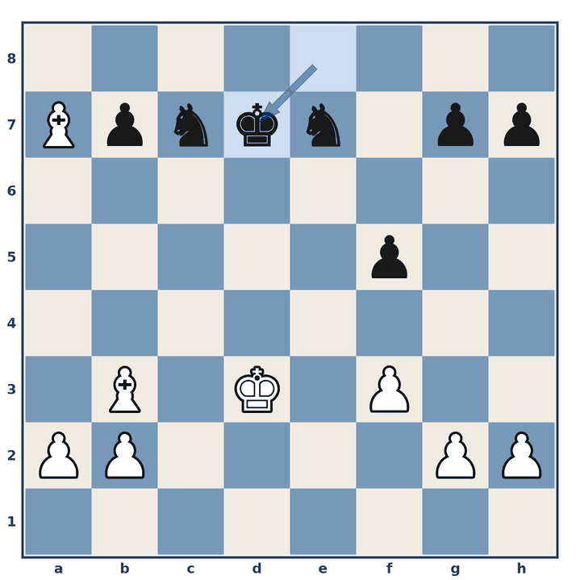
4. ♗f2
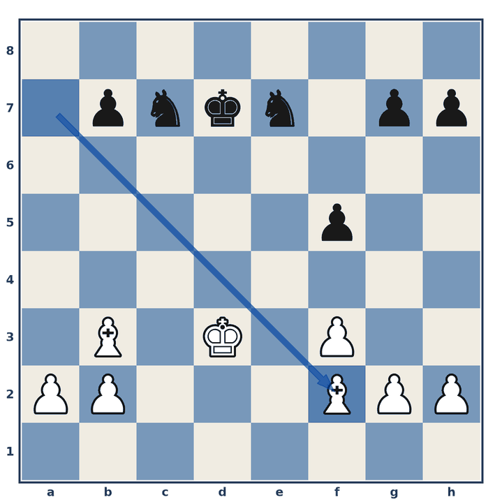
4… ♘c6
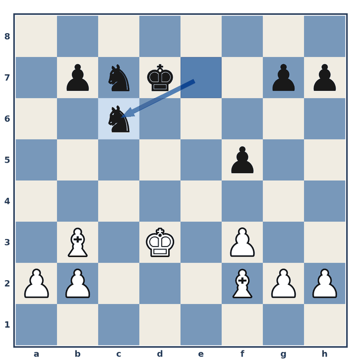
5. a4
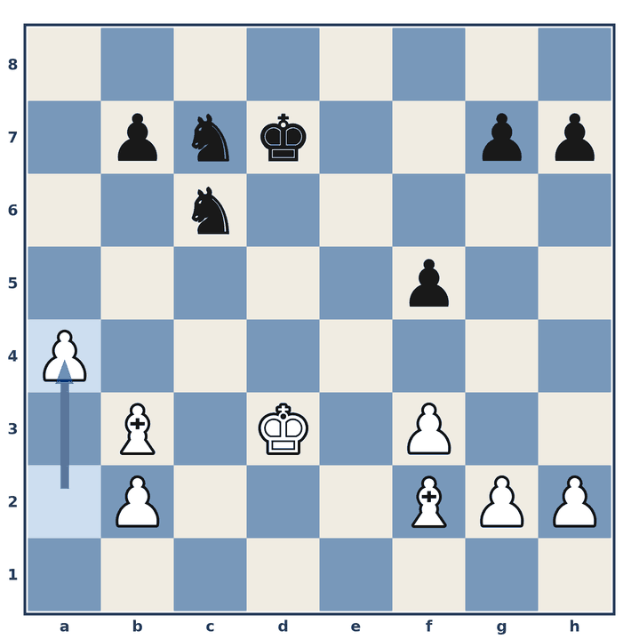
5… g6
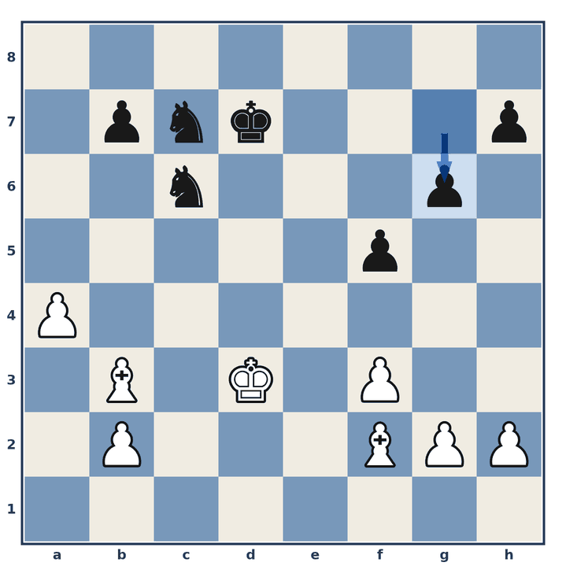
White controls more space due to his Bishop pair and will use it to gain territory by pushing his pawns and centralizing the King. One thing that is good about the Bishop pair is that at some point, White will trade one of the Bishops for an advantageous endgame. For example, he will take one of the Knights in a position that will give him a winning endgame.